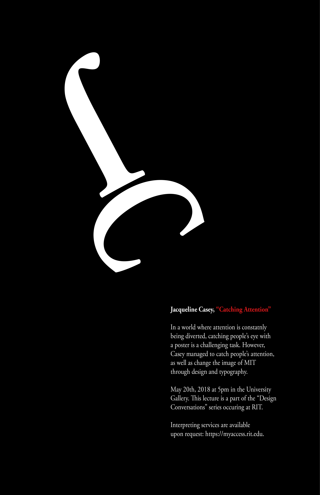

Ella Mathewson

Modeled after designer Jacqueline Casey, this poster was part of a project in my Digital Survey Design class. We research a designer and created a spread to display their work and information found on the designer. Then, mimicking their artistic style, created an advertisment as if they were coming to speak on campus. My research can be found here.
Since Jacqueline Casey was known for her abstract designs and small text, I did just this with my design. This way, the viewer is drawn in by the design, and read about the event. If the poster was intriguing enough, that curiosity would lead the viewer to attend the event as well.